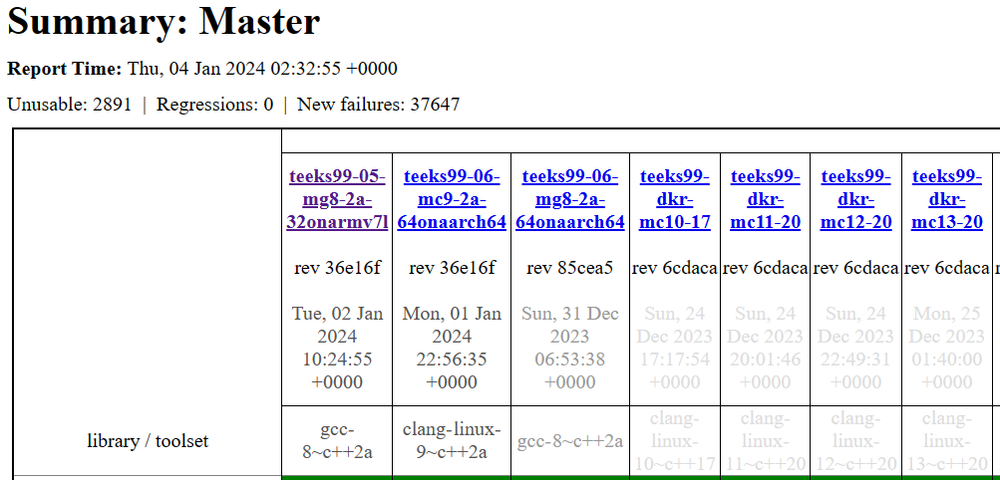
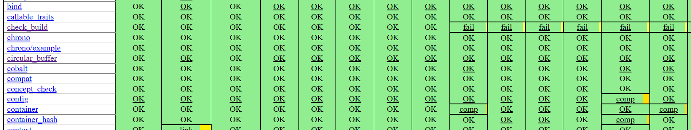
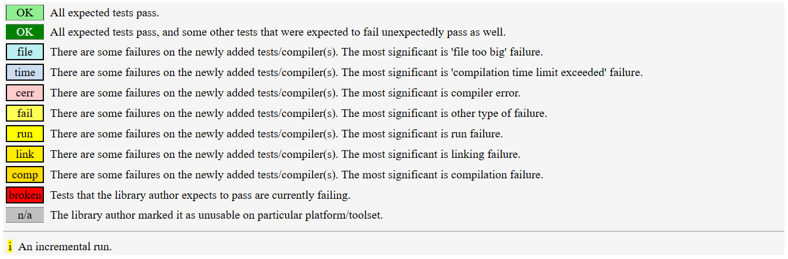
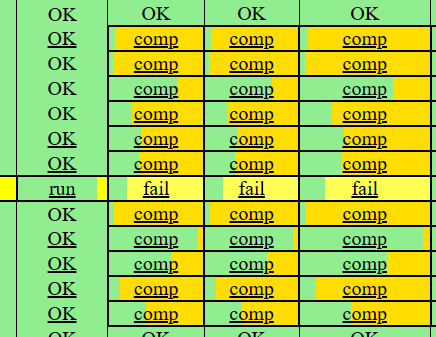
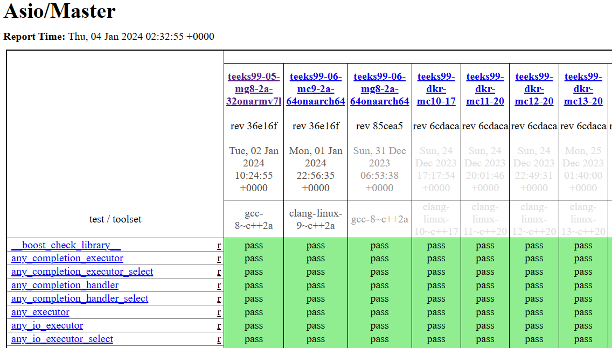
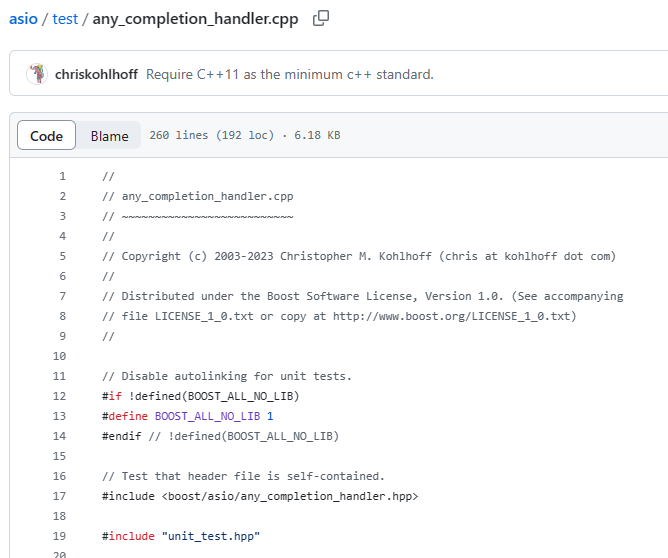
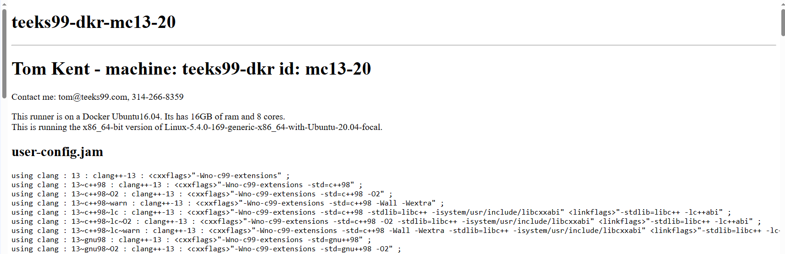

Test Matrix
Introduction
The Boost Test Matrix is an automated testing system that runs tests on Boost libraries across a wide range of platforms, compiler versions, and configurations. Its primary purpose is to ensure that the libraries work correctly under various conditions and to identify any compatibility issues.
The Test Matrix includes tests run on different operating systems (Windows, Linux, macOS) and with various compilers (such as GCC, Clang, MSVC). This diversity helps in catching issues that might only appear in specific environments.
For information on running regression tests locally, refer to Local Regression Tests.
Regression Dashboard
The results of library tests are published on the Boost Regression Testing Dashboard:
| Version | Results | Issues |
|---|---|---|
Develop branch |
||
Master branch |
This dashboard is publicly accessible and provides detailed information about the test results for most libraries.
Handling Test Failures
If your contribution causes test failures, it’s expected that you take responsibility for fixing them. This might involve making code adjustments or collaborating with others if the issue is complex, or affects multiple parts of Boost.
On the dashboard, you will find a matrix of test results. The columns represent different test runners (which correspond to different platforms, compiler versions, etc.), and the rows represent individual libraries.
When you click on the Dashboard URL, you will see the test Summary.

The table is large, and you will need to scroll up and down and left and right to view all relevant results. Note that some entries are underlined (even OK entries) which indicates they are links to further information.

Dashboard Legend
The dashboard uses different colors or labels to indicate the status of the tests (such as 'pass', 'fail', or 'unresolved'). Understanding these labels is key to interpreting the test results correctly. Note that some tests are expected to fail.

By clicking on specific cells in the matrix, you can view detailed results for a particular library and test runner. This includes information about which tests passed, which failed, and often detailed logs of the test runs.

Example
For example, click on the Boost.Asio entry in the left-hand column, and you will bring up the test matrix for the Asio/Master library.

Go deeper by clicking on the entries in the left-hand column, which are now individual tests, to bring up the test code. For example, click on any_completion_handler to view its source.

Selecting the column headers will bring up the configuration information that is being specified before each test in the column is run.

Boost Build
The Test Matrix uses B2 as its build system. Understanding how to write and modify Jamfiles (Boost.Build scripts) can be helpful for integrating your tests into the matrix.
Test Process Feedback
If you encounter issues with the testing infrastructure or have suggestions for improvement, engage with the Boost community (refer to Getting Involved). The testing process is continually evolving, and contributions to the testing infrastructure itself are valuable.